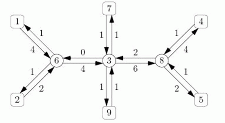

作为一名间谍，你的任务是确定国家之间运送的货物。每箱货物在驶离出口国后，都会被导向至少一个中间港口。在所有的港口，货物都储存在仓库之中，所以你没法从出口国到进口国追踪特定的箱子。卫星照片告诉你每条航道上每个方向运输了多少箱货物。同时你还知道这些箱子都走最短路。
你的任务是确定指定的两个国家之间的最大可能货运量和最小可能货运量，以箱数记。货运网络可以看作是一棵无根树，其中国家是叶子节点，中间港口是中间节点。同时你了解到，每箱货物一旦到达离开港口，绝对不会折返原路。

如上图所示，有6个国家，标号为1,2,4,5,7,9，还有三个港口，标号为3,6,8。虽然从1号国家到4号国家的路径上的每条边都通过了至少4箱货物，但是实际上没法从1号国家到4号国家输送4箱货物。非要如此，则在6号港口会有1箱从2号国家的送来的货物被迫折返，如是不可。